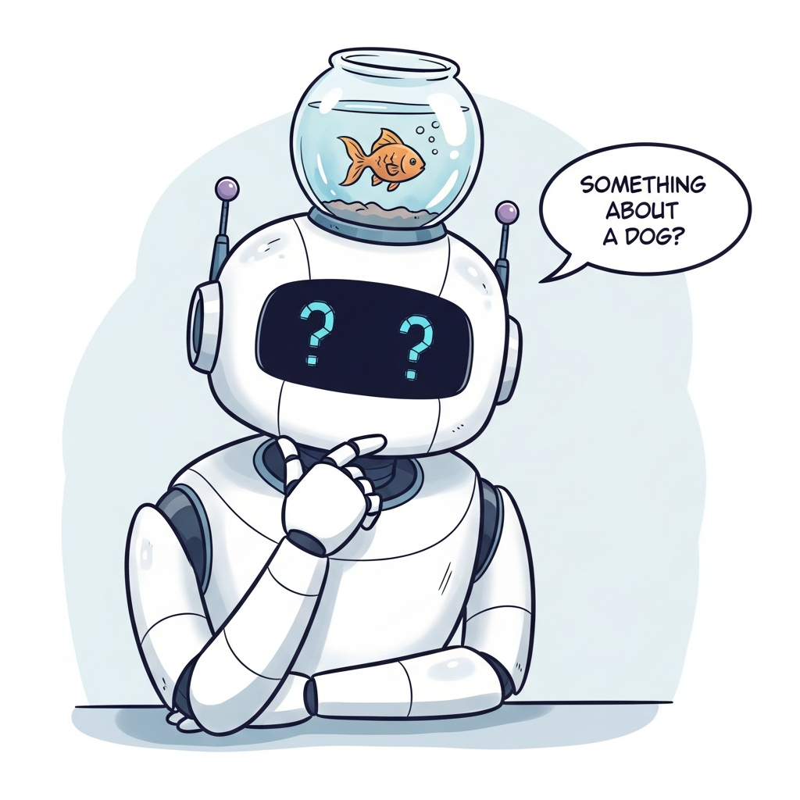
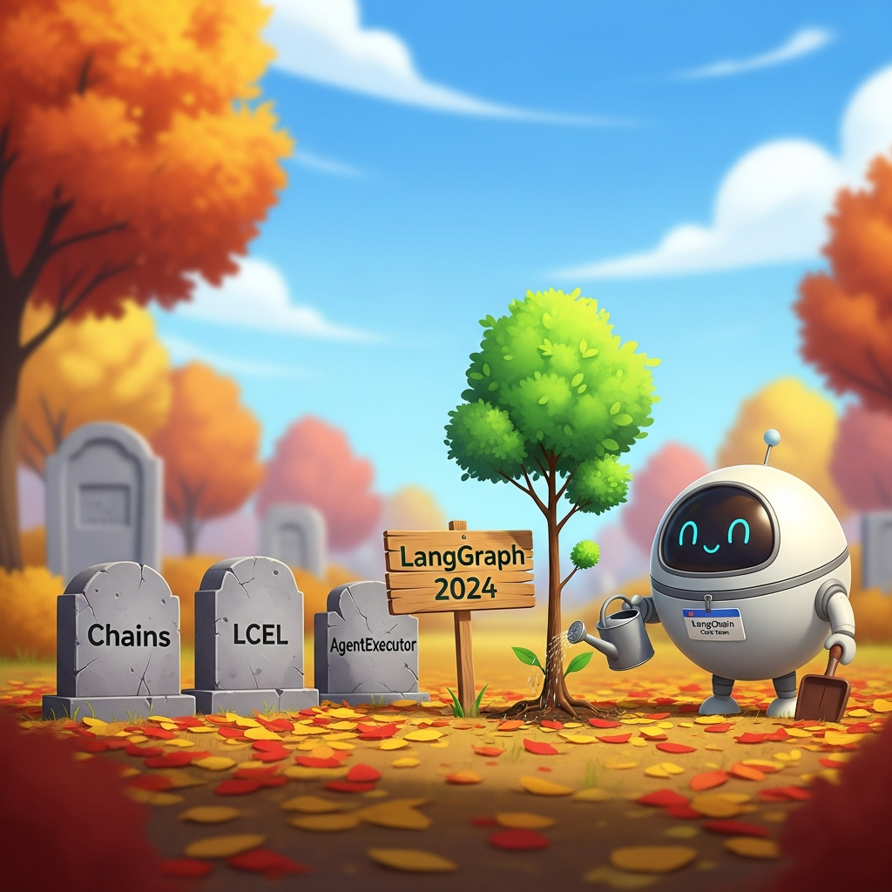

"A conversation memory primitive is just a ring buffer that learned to take itself too seriously."
KV, Reluctant-Context-Janitor AI Agent
Libraries and frameworks for conversational AI split into four layers: conversation memory primitives (how do you store and replay the last N turns? how do you summarize beyond the context window? how do you remember user facts across sessions?); orchestration frameworks for chat agents (LangChain, LlamaIndex chat engines, OpenAI Assistants, Anthropic conversations) that wire the LLM to tools, memory, and state; chat UI frameworks (Chainlit, Streamlit, Gradio, AG-UI) that turn an agent into a usable application; and voice-agent runtimes (Pipecat, LiveKit Agents, Vocode, Deepgram SDK) that pair STT, LLM, and TTS into a real-time pipeline. This section is a tour of the libraries in 2026 with opinionated pick-when guidance.
The shape of the stack in 2026 is converging: a chat agent is a state object that carries a message history, optional summarized long-term memory, structured user facts, tool definitions, and a system prompt; the runtime feeds new user messages plus the accumulated state to an LLM, processes any tool calls, and appends the response to history. Almost every framework below is a variation on that shape, differing in how aggressively it owns the state, what it does about retrieval and tools, and whether it ships a UI.
41.2.1 Conversation memory primitives

The single hardest design problem in long-running conversational AI is "what do we remember and what do we throw away?" Memory primitives are the building blocks that make that choice principled.
- LangChain ConversationBufferMemory (LangChain Inc., 2022; refactored 2024) is the simplest memory: keep every turn in a list, replay it on every LLM call. Its objective is to be the zero-tradeoff baseline that always works for short conversations, which matters because most conversations are short and the cost of a smarter memory is only visible at scale. The core concept is an append-only list of HumanMessage / AIMessage objects, optionally truncated by token budget (ConversationBufferWindowMemory keeps the last k turns; trim_messages applies token-budget truncation in LangChain 0.2+). Pick BufferMemory when conversations are under 20 turns or 4k tokens; everything beyond that needs summarization.
- ConversationSummaryMemory (LangChain Inc., 2022) compresses older turns into a rolling LLM-generated summary while keeping recent turns verbatim. Its objective is to let conversations exceed the context window by sliding old detail into a lossy summary, which matters when the user might chat for hundreds of turns. The core concept is a two-region memory (verbatim recent + summary of old) where each new exchange triggers a "summarize old+new" call. Pick SummaryMemory when conversations are long-running and detail of the first 20 turns can be summarized; avoid when every exact word matters (legal, medical compliance).
- ConversationSummaryBufferMemory (LangChain Inc., 2022) is the hybrid: keep verbatim recent turns up to a token budget, summarize anything older. This is the production default for most chat apps that need to handle multi-session conversations without blowing the budget. Pick it as the safe middle ground; the cost is one extra LLM call per turn for the summary update.
- ConversationKGMemory (LangChain Inc., 2022) extracts (subject, predicate, object) triples from the conversation and stores them in a knowledge graph that gets queried per turn for relevant facts. Its objective is to make "user said X about Y" recallable as structured data rather than buried in summary prose, which matters when the conversation is fact-heavy ("my dog's name is Rex, he's a labrador, allergic to chicken"). The core concept is an LLM-extraction step that mines triples per turn plus a per-turn retrieval that fetches relevant graph neighborhoods. Pick KGMemory when structured facts about the user dominate; for free-form conversational context, summary memory is simpler and adequate.
- VectorStoreRetrieverMemory (LangChain Inc., 2022) embeds every past turn into a vector store and retrieves the top-k most relevant past turns per current turn. Its objective is to make conversation memory semantically searchable rather than chronological, which matters when users return to topics days later ("about that error we discussed last week..."). The core concept is treating conversation turns as a corpus over which standard dense retrieval applies. Pick when long-running conversations have recurring themes; for short conversations the retrieval overhead is unnecessary.
- Zep Memory Server (Zep AI, 2023; v2 2024) is a dedicated memory service that runs alongside your agent and provides persistent multi-session memory with fact extraction, summarization, and semantic search over messages, exposed via SDKs in Python, TypeScript, and Go. Its objective is to extract the memory problem out of the application code into a separately-versioned service, which matters when multiple agents share the same user-fact store. The core concept is Sessions (per-conversation) inside Users (cross-session) plus an automatic fact-extraction layer that maintains a structured user profile. Pick Zep when you have multiple agents that should share user memory, or when you need a memory store that survives application restarts and code redeploys; for single-app use, LangChain's primitives are simpler.
- Mem0 (Mem0, 2024) is a younger open-source memory layer that explicitly targets "long-term personalized memory" with fact extraction and contradiction handling baked in. Its objective is to be the OSS competitor to Zep that you can self-host trivially. Pick Mem0 when self-hosting and OSS licensing matters; the Zep ecosystem is larger but Mem0's recent traction in 2024-25 makes it worth evaluating.
The primitives above (verbatim window, summary, KG, vector) all assume you will assemble them yourself. mem0ai (Mem0, 2024) collapses that scaffolding into a two-method API: memory.add(messages, user_id=...) runs fact extraction and contradiction resolution, and memory.search(query, user_id=...) returns the relevant facts ready to splice into the next system prompt. Prefer mem0ai when you want long-term personalization today without authoring a memory pipeline; graduate to Zep when you need a separately-versioned memory service or multi-agent shared memory.
pip install mem0ai
from mem0 import Memory
from openai import OpenAI
memory, llm = Memory(), OpenAI()
def chat(user_id: str, user_msg: str) -> str:
facts = memory.search(query=user_msg, user_id=user_id)["results"]
sys = "User facts:\n" + "\n".join(f["memory"] for f in facts)
reply = llm.chat.completions.create(
model="gpt-4o-mini",
messages=[{"role": "system", "content": sys},
{"role": "user", "content": user_msg}],
).choices[0].message.content
memory.add([{"role": "user", "content": user_msg},
{"role": "assistant", "content": reply}], user_id=user_id)
return replyThe single most common production complaint about chatbots is "it doesn't remember what I told it." This is almost never a model capability problem and almost always an application-design problem: the system prompt does not surface the previous summary, the verbatim window is too short, or the structured user facts are not being fetched. Memory architecture (what to summarize, when to extract a fact, when to retrieve) deserves at least as much design effort as the prompt itself.
41.2.2 Conversation orchestration frameworks

Orchestration frameworks own the "what happens between user message and bot response" loop: tool selection, retrieval, multi-step reasoning, memory updates, streaming.
- OpenAI Assistants API (OpenAI, 2023; v2 2024) is OpenAI's hosted conversation runtime: you create an Assistant (system prompt + tool definitions), then create persistent Threads, post Messages, and run the assistant to produce responses. Its objective is to take ownership of the conversation state entirely so client code never re-sends the message history, which matters for thin-client architectures where the server should not store messages. The core concept is server-side Threads with automatic message persistence, file search retrieval, code interpreter, and function calling all behind a single Run primitive. Pick Assistants when you want OpenAI to host the conversation state, when file-search retrieval out-of-the-box is enough, and when you do not mind a 2023-vintage abstraction that has been somewhat eclipsed by the newer Responses API. Avoid when you need fine-grained control over the message history (Assistants hides it from you) or are not on OpenAI.
- OpenAI Responses API (OpenAI, 2025) is the 2025-vintage successor to Chat Completions that adds first-class tool use, conversation state via
previous_response_id, and a unified interface for reasoning models. Pick Responses for new OpenAI projects in 2026; pick Chat Completions only for legacy compatibility. - Anthropic Messages API and Projects (Anthropic, 2023; Projects 2024) together form Anthropic's conversational primitive: the Messages API is stateless (you always send the full history), and Projects (or your own store) supplies the persistent context. Its objective is to keep conversation state owned by the caller so you can audit, mutate, and rewrite history without server-side abstraction in the way, which matters when your bot needs strict control over what the model sees. Pick the Messages API when you want full control over message history (most production teams who care about determinism prefer this); use Projects for team-shared system-prompt-plus-knowledge bundles when the surface is Claude itself.
- LlamaIndex chat engines (LlamaIndex Inc., 2022+) are LlamaIndex's chat-over-knowledge abstraction: a ChatEngine wraps a query engine plus conversation memory, so user messages flow through retrieval and the response is grounded in the index. Its objective is to make "chat with your documents" a one-liner where retrieval-aware history is automatic, which matters because naïvely passing chat history to a retriever (the "retriever sees the chat history including the last bot answer") creates feedback loops. The core concept is the ContextChatEngine and CondensePlusContextChatEngine: the latter rewrites the user message to be standalone before retrieval, so retrieval sees a clean query. Pick LlamaIndex chat engines when document-grounded chat is the use case; for general agents, LangChain's broader graph is more flexible.
- LangChain conversational chains and LangGraph (LangChain Inc., 2022; LangGraph 2024) are the canonical orchestration framework. The 2024 shift was the deprecation of the classic Chain APIs in favor of LangGraph, a typed-graph framework where each node is an LLM call or tool call and edges encode the conversation policy. Its objective is to make multi-step agentic conversations (clarify, retrieve, decide, tool-use, summarize) expressible as a graph rather than buried in nested conditionals, which matters when the conversation policy is non-trivial. The core concept is the StateGraph: nodes mutate a typed state object, edges decide which node runs next based on the state. Pick LangGraph when you have a clear conversation policy (the conversation has phases or branches); for simple chat over a knowledge base, LlamaIndex chat engines are leaner.
- Haystack 2.x Chat Components (deepset, 2020+) ship a ChatMessage type plus Pipeline components (ChatPromptBuilder, OpenAIChatGenerator, AnthropicChatGenerator) for chat-shaped pipelines. Pick Haystack when you already use it for retrieval or when the typed Pipeline DSL fits the team; for greenfield chat, LangGraph and LlamaIndex have more momentum.
- Microsoft Semantic Kernel (Microsoft, 2023) ships a ChatHistory type and a ChatCompletionService abstraction that work uniformly across OpenAI, Azure OpenAI, Anthropic, and self-hosted models. Pick Semantic Kernel when you are in the .NET ecosystem or when Microsoft 365 integration is the deciding factor; outside that, LangGraph and Anthropic-direct have more weight.
- DSPy (Stanford NLP, 2023) is a different abstraction: rather than authoring prompts directly, you declare Modules with input/output signatures and DSPy compiles prompts (or fine-tunes weights) against a metric. For multi-turn conversation, the History module and the assert/suggest API let you encode invariants the conversation must respect. Pick DSPy when you have a metric you can compute (correctness, factuality) and want prompts that survive model upgrades; for typical chat without an evaluable metric, classic prompt-engineering frameworks are simpler.
41.2.3 Chat UI frameworks
A bot without a usable UI is a script. The chat-UI layer is what turns an agent into a product (or at least a testable prototype). The 2026 toolkit clusters into "Python-first prototyping" (Chainlit, Streamlit, Gradio) and "production embeddable widgets" (your own React + a streaming hook, or framework-specific kits).
- Chainlit (Chainlit, 2023) is the most chat-specific of the Python UI frameworks, designed from the start around streaming chat messages, intermediate steps (tool calls visible to the user), file uploads, and "reaction" feedback (thumbs up/down). Its objective is to be the chat-UI equivalent of Streamlit, where you write a Python function and get a hosted chat surface, which matters because prototyping a chat agent without a UI is painful. The core concept is the
@cl.on_messagedecorator and thecl.Message/cl.Stepprimitives that stream nicely with chain-of-thought visible. Pick Chainlit for chat-specific prototypes and internal-team demos; production deployment to end users usually wants a custom UI eventually. - Streamlit (Snowflake, 2018; chat API 2023) added
st.chat_messageandst.chat_inputin mid-2023, making it a credible chat-UI option for the long tail of internal tools. Its objective is to leverage Streamlit's much larger Python-dev userbase to ship chat UIs alongside dashboards and data apps, which matters when the chatbot is part of a broader analyst tool. Pick Streamlit when chat is one feature among many in a Python data app; for chat-only prototypes, Chainlit's chat-specific affordances win. - Gradio (Hugging Face, 2019; ChatInterface 2023) is the canonical Hugging Face demo UI and the de facto standard for model-card demos on the Hugging Face Hub. The
gr.ChatInterfacewrapper is the fastest path from "I have a generate function" to "I have a public chat UI". Pick Gradio for Hugging Face Hub demos and quick public-facing showcases; for serious internal use Chainlit's affordances (steps, files, feedback) are more polished. - AG-UI Protocol (CopilotKit / community, 2024-2025) is an open protocol for streaming agent events to a UI: it defines a JSON event stream (text deltas, tool-call deltas, status updates, generative UI elements) so any frontend that speaks the protocol can render any backend that emits it. Its objective is to be the "HTTP for agent-to-UI streaming", which matters because before AG-UI every framework invented its own SSE event schema. Pick AG-UI when you want to decouple your agent runtime from your UI choice; for greenfield single-stack apps, framework-specific streaming is simpler in the short run.
- CopilotKit (CopilotKit, 2023) is a React component library for embedding in-app AI assistants ("Copilots") with deep app-state hooks: the AI can read and mutate your app's state via declared actions. Its objective is to make the embedded-assistant pattern (a chat sidebar that knows the user's current context) a few-component task, which matters when the bot is a feature inside an existing SaaS rather than a standalone product. Pick CopilotKit for React-based SaaS apps adding AI sidebars; for chat-app primary surfaces, build the UI directly.
- Vercel AI SDK (Vercel, 2023; v3 2024) is a JavaScript/TypeScript SDK for streaming LLM responses to Next.js, React, Svelte, and Vue frontends, with primitives like
useChatthat handle SSE, message history, and tool-call rendering. Its objective is to be the de facto frontend toolkit for chat UIs in the Vercel ecosystem (and beyond, since it works outside Vercel hosting). Pick Vercel AI SDK for any TypeScript-fronted chat app; it has overtaken bespoke fetch loops as the default by 2026. - Bot Framework Web Chat (Microsoft, 2017) is the embeddable React component for chats that originate in Bot Framework / Copilot Studio bots. Pick when you ship a bot via the Microsoft stack and need a polished embeddable widget; outside that, Vercel AI SDK is the modern default.
41.2.4 Voice-agent runtimes
Voice-agent runtimes are the libraries that pair STT, LLM, and TTS providers into a coherent real-time conversation pipeline. They are the most operationally complex part of the conversational AI stack because every component (turn detection, barge-in handling, end-of-speech, prosody, audio jitter) is itself a research area.
- Pipecat (Daily.co, 2024) is the open-source Python framework for real-time voice and video agents, with named processors (transports, VAD, STT, LLM, TTS, aggregators) connected into a pipeline. Its objective is to be the most pipeline-explicit voice-agent framework, which matters when you want to inspect or replace any single stage. The core concept is a Frame-flowing pipeline: Frames (audio, transcript, LLM tokens, TTS audio) flow through Processors that filter or transform them. Pick Pipecat when you want fine-grained control over the voice pipeline (custom VAD, custom barge-in policy, mid-call STT swap); for the canonical happy path LiveKit Agents is leaner.
- LiveKit Agents (LiveKit, 2024; v1.0 in 2024) is the agent framework built on top of LiveKit's WebRTC media stack. Its objective is to make voice agents that join LiveKit rooms as a participant (alongside human users) trivial to write, which matters for browser-and-app voice apps that already use LiveKit for peer-to-peer audio. The core concept is the VoiceAssistant class that wires STT + LLM + TTS into one object plus the Agents framework that runs it as a LiveKit participant. Pick LiveKit Agents when WebRTC voice in a browser or mobile app is the channel; for telephony-first agents, Vocode and Pipecat-with-Twilio-transport are more direct.
- Vocode (Vocode, 2023) is an open-source Python framework for telephony-first voice agents, with native Twilio, Vonage, and direct SIP integrations as the primary use case. Its objective is to make "AI that picks up the phone" a small Python program rather than a multi-system integration project, which matters for phone-call use cases (AI receptionist, AI outbound sales). Pick Vocode when telephony is your channel; for WebRTC, LiveKit Agents is the fit.
- Deepgram Voice Agent API (Deepgram, 2024) is Deepgram's managed voice-agent endpoint: a single WebSocket connection where you send audio in and receive audio out, with the STT-LLM-TTS pipeline handled server-side. Its objective is to skip the framework layer entirely and treat the voice agent as an API, which matters when you want speed-to-market and Deepgram's STT/TTS quality is what you wanted anyway. Pick Deepgram Voice Agent when you want a managed pipeline; for self-hosted pipelines, the Deepgram Python SDK is one provider component inside Pipecat or LiveKit.
- OpenAI Realtime Agents (OpenAI, 2024) is OpenAI's reference framework on top of the Realtime API, wiring multi-agent voice flows (one agent hands off to another based on intent). Pick when you want OpenAI Realtime API-only voice agents with a structured handoff pattern; for multi-provider, Pipecat and LiveKit Agents are framework-neutral.
- ElevenLabs Conversational AI (ElevenLabs, 2024) is ElevenLabs's managed voice-agent product that combines their TTS with an LLM (yours or theirs) and STT into a single endpoint, distinguished by ElevenLabs's voice cloning and voice quality. Pick when ElevenLabs voices are the differentiator and a managed pipeline is acceptable.
41.2.5 Message format and protocol libraries
A handful of utility libraries handle the message-format plumbing that every conversational system needs: rendering Markdown and code blocks in chat, parsing tool-call JSON, validating function-call schemas, streaming SSE events.
- Instructor (Jason Liu, 2023) is the canonical Python library for typed structured outputs from chat models, wrapping the OpenAI / Anthropic / etc. function-calling APIs with Pydantic models. Its objective is to make "extract a typed object from a chat response" a decorator-and-Pydantic-model task, which matters when the chat response must be machine-readable (slot filling, JSON extraction, structured tool arguments). Pick Instructor for structured-output chat applications; for free-form chat, the underlying SDKs are enough.
- Pydantic AI (Pydantic, 2024) is the Pydantic team's agent framework built around typed message schemas and tool definitions. Its objective is to bring Pydantic's type-safety culture to LLM agents, which matters in production codebases that already use Pydantic for boundary validation. Pick Pydantic AI when type-safety and Pydantic-native validation are the team's center of gravity.
- LiteLLM (BerriAI, 2023) is a uniform chat-completion API that wraps OpenAI, Anthropic, Bedrock, Vertex AI, Azure OpenAI, and 100+ other providers with one interface. Its objective is to let you swap providers by changing a model string rather than rewriting your client code, which matters when you A/B-test models or want to fail over across providers. Pick LiteLLM as the chat-API abstraction layer if you target multiple providers; for single-provider apps, the native SDK is simpler.
41.2.6 A working stack
Who: A 2026 engineering team building a multi-channel chat-and-voice agent from scratch.
Situation: The product had to span web chat, voice, and a few API integrations, with shared memory and a single conversation log across channels.
Problem: The conversational AI library landscape (orchestration, memory, voice, structured output, provider abstraction) is large enough that ad-hoc choices produced incompatible pieces and fragile integrations.
Dilemma: Pick a single all-in-one framework (lock-in, limited per-layer optimality) or compose best-of-breed libraries (more wiring, but each layer remains swappable).
Decision: The team standardized on a composed, boring-but-correct reference stack rather than an all-in-one framework.
How: The stack was roughly: Anthropic Messages API or OpenAI Responses API for the LLM, LangGraph for orchestration if the conversation has structure (otherwise direct SDK calls), ConversationSummaryBufferMemory or Zep for memory, Vercel AI SDK for the web chat UI, LiveKit Agents or Pipecat for voice, Instructor for any structured-output extractions, and LiteLLM as the abstraction layer if you swap models for cost or A/B testing.
Result: A multi-channel agent that shared memory across web and voice, with each layer swappable when a better option appeared and end-to-end instrumentation for cost and latency.
Lesson: None of the pieces in a 2026 conversational AI stack are novel; the wins are mostly in making the boring-but-correct composition work together and instrumented end-to-end, not in picking exotic libraries.
from anthropic import Anthropic
from zep_python.client import Zep
client = Anthropic()
zep = Zep(api_key="...")
def chat_turn(user_id: str, session_id: str, user_msg: str) -> str:
# 1. Append user message and fetch memory context
zep.memory.add(session_id, messages=[{"role": "user", "content": user_msg}])
mem = zep.memory.get(session_id)
# 2. Build messages: summary + verbatim recent + new user msg
messages = [
{"role": "user", "content": f"Context: {mem.summary}\n\nUser profile: {mem.facts}"},
*[{"role": m.role, "content": m.content} for m in mem.messages[-8:]],
{"role": "user", "content": user_msg},
]
# 3. Call the model
resp = client.messages.create(model="claude-sonnet-4-5", max_tokens=1024,
system="You are a helpful assistant.",
messages=messages)
reply = resp.content[0].text
# 4. Persist assistant turn so memory stays in sync
zep.memory.add(session_id, messages=[{"role": "assistant", "content": reply}])
return reply41.2.7 Comparing the libraries
| Library | Layer | Pick when | Avoid when |
|---|---|---|---|
| LangGraph | Orchestration | Conversation has structure or phases | Stateless single-turn use |
| LlamaIndex chat engines | Orchestration over docs | Chat-with-docs is the use case | Generic multi-tool agent |
| OpenAI Assistants API | Hosted orchestration | Thin-client architecture | Need direct history control |
| Zep / Mem0 | Memory | Multi-session, multi-agent memory | Single-session ephemeral chat |
| Chainlit | UI prototyping | Internal demo, chat-only app | Production end-user surface |
| Vercel AI SDK | Production UI | TypeScript / Next.js front-end | Python-only stack |
| LiveKit Agents | Voice runtime | WebRTC voice in app or browser | Phone calls / SIP / Twilio |
| Pipecat | Voice runtime | Pipeline-explicit voice control | Canonical happy-path voice |
| Vocode | Voice runtime | Telephony first (Twilio, SIP) | WebRTC-only browser channel |
| Instructor | Structured output | Typed slot-filling extraction | Free-form prose responses |
Every framework in this section has at least one "we are now the way to do agents" story (LangChain, LlamaIndex, Pydantic AI, DSPy, OpenAI Agents SDK, Semantic Kernel, AutoGen). The right way to decide is to ignore the marketing and pick by: (1) does the framework's primary abstraction match the shape of your problem? (2) is your team comfortable in its host language and idioms? (3) does it ship with the integrations you need (channels, vector DBs, models)? Most teams that switch frameworks mid-project did not lose money on the framework, they lost it on the year of accumulated prompt engineering and evals that need to be re-validated under the new framework's conventions.
2024-25 saw a Cambrian explosion of agent frameworks aimed at multi-agent conversations: OpenAI's Agents SDK (the 2025 evolution of Swarm), Microsoft AutoGen, CrewAI, and many others. These deserve separate treatment because their primary abstraction is "agent talking to agent" rather than "human talking to agent", which is the focus of this chapter. Chapter 29 covers agent frameworks; the libraries here are for human-facing conversational AI.
41.2.8 Memory architecture patterns in production
The library catalog above is only useful in the context of memory architecture choices that the libraries enable. The 2026 patterns that mature production teams converge on:
- Three-tier memory (verbatim + summary + structured facts) is the production default: recent N turns verbatim, rolling LLM-generated summary of older turns, plus an extracted structured fact store (key-value or graph) for user-specific information. The verbatim window handles immediate coherence; the summary handles "what did we discuss this session"; the fact store handles "what does the bot need to know about this user across sessions". Almost every Zep or Mem0 deployment is a variation on this three-tier shape.
- Per-user fact extraction is the load-bearing part of multi-session memory. Triggers are typically (a) every N turns, or (b) when the LLM emits a structured "I learned X about the user" output, or (c) on session end. The extraction prompt is a separate LLM call that takes the recent dialogue and produces JSON facts; Instructor or Pydantic AI are the typical implementations. Watch for contradictions ("user said dog is named Rex" then later "I have a cat named Whiskers"): a contradiction-handling pass is needed at scale.
- Semantic retrieval over conversation history handles the "remember that thing we discussed three weeks ago" case. Embed every turn, store in a vector DB, retrieve top-k per current turn. The retrieval prompt should rewrite the user message as a standalone query first (otherwise pronouns and ellipsis cause retrieval failure).
- Episodic memory consolidation is the longer-horizon analog of summarization: at session end (or at a daily / weekly batch), summarize the session into an "episode" record that gets stored alongside the user's fact profile. Episodes are retrievable as either prose or as facts. This is the pattern that long-running companion bots (Character.AI, Inworld) implement; the literature on episodic memory in LLMs is still pre-paradigmatic but the implementation patterns are reasonably stable.
- Working-memory scratchpad is a per-conversation transient slot the bot can write to (and read from) that does not persist beyond the session. Used for multi-turn reasoning state, partial form-filling, calculation intermediates. The OpenAI Assistants API exposes a Thread-scoped scratchpad via tool calls; LangGraph implements it as a typed state field.
41.2.9 Streaming and real-time token handling
Every production chatbot eventually needs streaming. The library landscape around streaming clusters into four concerns:
- SSE (Server-Sent Events) vs WebSocket: most chat applications stream via SSE (one-way server-to-client), which is simpler and survives most proxies. WebSocket is required for bidirectional streaming (voice agents) and for tool-call streaming where the server may receive intermediate client signals. Vercel AI SDK abstracts SSE entirely; OpenAI's SDKs ship both.
- Token-level vs chunk-level streaming: OpenAI streams tokens individually; Anthropic streams in larger chunks (Content Block Delta). Most UI frameworks (Vercel AI SDK, Chainlit) abstract this difference. The chunking choice matters for typing-cursor UX (token-level feels more "real-time"; chunk-level is more network-efficient).
- Tool-call streaming is harder: the model emits a partial function-call JSON which the client must accumulate and validate before invoking. OpenAI's streaming response includes
function_calldeltas; Anthropic streamstool_useblocks. Libraries like Instructor and the OpenAI SDK handle accumulation; for raw HTTP you have to parse the deltas yourself. - Interruption and cancellation: in voice agents specifically, the user can interrupt mid-response. The framework must support cancelling an in-flight LLM call cleanly. LiveKit Agents and Pipecat both implement explicit cancellation; for text agents, AbortController in the browser plus a cancel-token on the server is the canonical pattern.
41.2.10 Evaluation and observability libraries
A conversational AI that ships without evaluation is a conversational AI that drifts unmonitored. The library layer here is shared with Part IX (Evaluation & Observability) but the chat-specific picks are worth flagging in this chapter:
- Langfuse (Langfuse, 2023) is the open-source LLM observability platform with first-class chat-tracing primitives: a Trace per conversation, Generations per LLM call, Scores per turn. Its objective is to be the chat-tracing default for self-hostable observability, which matters for data residency and cost. Pick Langfuse when self-hostable observability with chat-trace structure is the requirement.
- LangSmith (LangChain Inc., 2023) is LangChain's hosted observability and eval platform, with deep LangChain / LangGraph integration. Pick LangSmith when the stack is LangChain-native and managed observability is acceptable; for non-LangChain stacks, Langfuse is more portable.
- Arize Phoenix (Arize AI, 2023) is open-source LLM observability built around OpenTelemetry. Pick when you want to integrate with broader observability tooling (Datadog, Honeycomb).
- Braintrust (Braintrust, 2023) is a hosted eval platform with strong dataset-curation and human-feedback collection. Pick for systematic chat-eval programs.
- DeepEval (Confident AI, 2023) is a Python testing framework for LLM applications with pytest-like semantics. Pick when you want LLM evals in your existing CI test runner.
41.2.11 Choosing among the orchestration frameworks
Empirically, LangChain went through three primary abstractions (Chains, LCEL, LangGraph) in 24 months. LlamaIndex went through Index, QueryEngine, and Workflow in similar time. The library half-life for "the recommended way to do X" is roughly 18 months in this space. The implication is that the code you write should be as small a delta from the SDK direct calls as possible: when (not if) the framework's recommended abstraction changes, you want a small migration, not a rewrite. Treat the framework as a thin and replaceable layer.